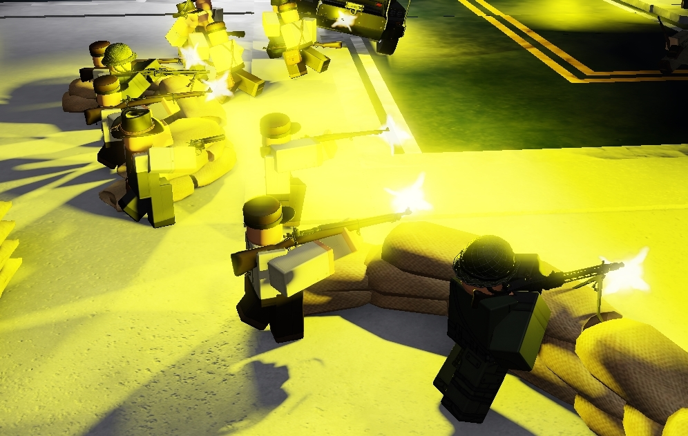
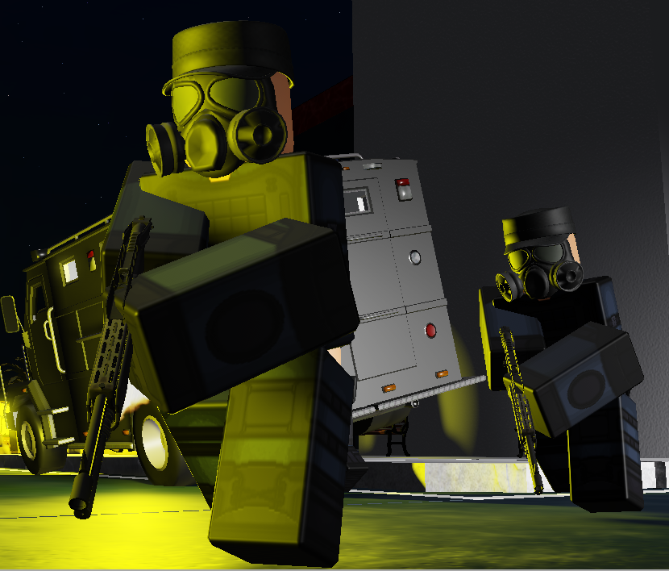
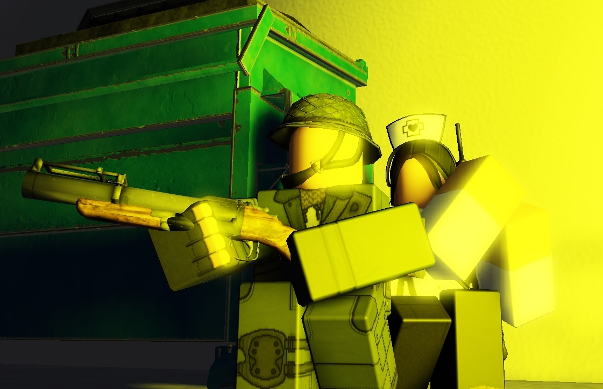
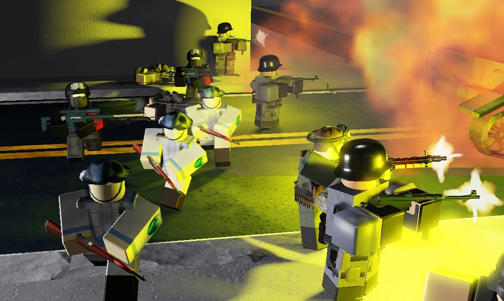

When I was playing Tower Defense Simulator in Roblox I was thinking to myself, yeah I can make something like this all by myself, and I also really . But I had to to make it stand out from the crowd, so I settled with the first question when it came to the gameplay Concept. Why are you defending in the first place?
When it came to this game I thought it'd be a cool idea to make it based around a post apocalyptic holocaust where new civilizations are being founded around and are expanding. Specifically you play in the perspective of a singular City State, known for their sufficient water plants. Caught in the crossfire of a Great War between 5 Factions who's goal is to flank around into your City to get the jump on their opposition, completely uncaring to the insurmountiful destruction they'll 'cause as they enter the city stat'es region. I thought this was a pretty good set up for my type tower defense as it plays into the entire aestetic and gameplay of the game, which I 'll get into.
Upon the Start of the Game you'll be put straight into the action, they'll be a period of time where you can set up defenses and place your troops wherever you like. New players only get the Rifleman squad that have three rifleman and a singular Officer but I'm intending to make any game last long with even the "weakest" Untit, ultimately depending on your strategic skill than your quality of Troop
Usually if the Enemy Wave has lost too many of their troops or if you were able to destroy there morale they'll stop into a standstill. This would be the perfect oppurtunity for you to launch a counter attack, picking off as many incoming reinforcement's as you can so the next wave will be less severe or even force the main line to pull out completely. Now as the Rifleman Unit works better as more of a defense Unit unless you have a wide number of them to large a full on charge, it'd be better to get Units more suited to fight up close.
These Units were made specifically for certain defensive and offensive purposes Rifleman can't achieve. Such as Armored Units, Chemical Attacks Snipers, Paratrooper Raids, and Bombardments. Commando are perfect for operations that involve Chemical warfare and Urban Close to Mid Quarters Operations, best used for flanking and sabotaging of special enemy Units.
There is also anti-armor units that can be used to explode any incoming vehicle that seeks to bust through sapper defenses or buildings.
With how strategically demanding this game will get once we reach later waves, it makes sense that the A.I. should give the player a run for their money. They'll always try to flank your defenses, never wanting to use the main roads unless armored vehicles are present. They'll utilize granades, provide surpressing fire for comrades falling back. They'll take buildings and dig in to safely set up artillery barrages up close. And yes, they can also Surrender. By all means I want the A.I. to always try to one up the player even in desperate circumstances to where sometimes they'll use suicidal tactics.
This project is very much in it's early stages as I haven't gotten into scripting nor have I finished the first map. I have been extremely busy with school so I will definetly get to work on this by summer break. For what it's worth I am really exited for when this project is finished with all of the complete models and maps including units!